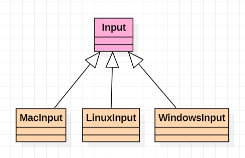

Structure

Advantages
- Functions are overloaded on different platforms and then called by standard functions.
Input
Input : As a base class, it provides a public standard function interface which is easy to call and an implementation function interface which will be overloaded.
class HAZEL_API Input
{
public:
inline static bool IsKeyPressed(int keycode) { return s_Instance->IsKeyPressedImpl(keycode); }
inline static bool IsMouseButtonPressed(int button) { return s_Instance->IsMouseButtonPressedImpl(button); }
inline static std::pair<float, float> GetMousePosition() { return s_Instance->GetMousePositionImpl(); }
inline static float GetMouseX() { return s_Instance->GetMouseXImpl(); }
inline static float GetMouseY() { return s_Instance->GetMouseYImpl(); }
protected:
virtual bool IsKeyPressedImpl(int keycode) = 0;
virtual bool IsMouseButtonPressedImpl(int button) = 0;
virtual std::pair<float, float> GetMousePositionImpl() = 0;
virtual float GetMouseXImpl() = 0;
virtual float GetMouseYImpl() = 0;
private:
static Input* s_Instance;
};
WindowsInput
WindowsInput : The implementation function is overloaded with GLFW.
class HAZEL_API Input
{
public:
inline static bool IsKeyPressed(int keycode) { return s_Instance->IsKeyPressedImpl(keycode); }
inline static bool IsMouseButtonPressed(int button) { return s_Instance->IsMouseButtonPressedImpl(button); }
inline static std::pair<float, float> GetMousePosition() { return s_Instance->GetMousePositionImpl(); }
inline static float GetMouseX() { return s_Instance->GetMouseXImpl(); }
inline static float GetMouseY() { return s_Instance->GetMouseYImpl(); }
protected:
virtual bool IsKeyPressedImpl(int keycode) = 0;
virtual bool IsMouseButtonPressedImpl(int button) = 0;
virtual std::pair<float, float> GetMousePositionImpl() = 0;
virtual float GetMouseXImpl() = 0;
virtual float GetMouseYImpl() = 0;
private:
static Input* s_Instance;
};
Supplement knowledge
static
Objects that are modified by static in their parent class do not will change their access after inheriting.